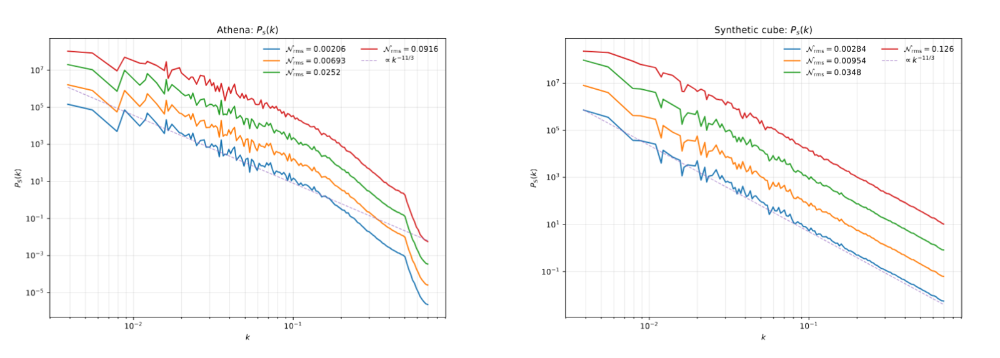

Recovering 3D Magnetic Turbulence from Single-frequency Faraday Screens
An observer-ready statistic that recovers inertial-range slopes and cleanly separates emission- vs. Faraday-screen structure using one map at one wavelength.
Talk recording (University of Kentucky SPS · Oct 9, 2025)
If the embed doesn’t load, open on YouTube.
What’s new
- Directional correlation of polarization angle recovers turbulence slopes from a single band, avoids angle unwrapping, and is robust to interferometric high-pass filtering.
- Crossover criterion (set by the wavelength and the strength of Faraday rotation) tells you when spectra trace synchrotron angles vs. Faraday screen fluctuations.
- Validation on synthetic Faraday screens and Athena MHD cubes at sonic Mach 1 and 10; measured slopes match ground-truth spectra across seeds.
- Observer recipe. Measure slopes, locate crossover, ready for single-frequency survey maps where multi-frequency coverage is sparse.
Takeaway for observers
With one map at one wavelength, you can already estimate inertial-range slopes and separate emission vs. screen structure, with no RM synthesis required.
Reproducibility
The analysis code behind the paper's figures is on GitHub at astrosander/AstroTurbulence (Python, synthetic Faraday screens, the directional-spectrum estimator and the AthenaK map pipeline).
Artifacts

Figure. Directional spectrum from a single-band polarization map. At shorter wavelengths the slope follows the synchrotron angle field, and at longer wavelengths it follows screen fluctuations. The data-driven crossover agrees with predicted scaling.
Publication status
- Title Recovering 3D Magnetic Turbulence from Single-frequency Faraday Screens
- Authors A. Melnichenka (first author), A. Lazarian, D. Pogosyan
- Status published, The Astrophysical Journal 1011, 16 (2026). doi 10.3847/1538-4357/aeac22
Talks & media
- UK SPS Invited Talk (Oct 9, 2025), video above
- APS DPP 2025 (Long Beach, CA), contributed oral, Nov 2025
- AAS 247 (Phoenix, Jan 2026), oral talk, abstract 360.07
- The Magnetized Turbulent Universe (Playa del Carmen, Nov 2025), invited 30-minute talk
About the author
Belarusian student at Berea College (KY), double major in Physics and Mathematics, with a first-degree diploma at the Belarusian National Physics Olympiad. Research threads are MHD turbulence diagnostics, electron-fluid instabilities and Europa's thermal and orbital history, and earlier self-interacting dark matter kinetic theory (2025 to 2026).